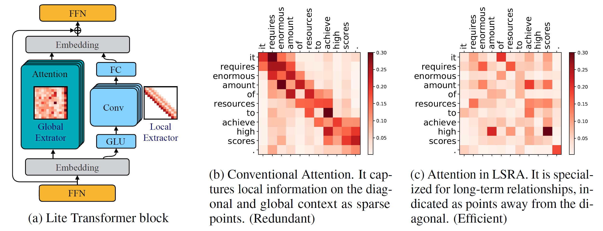
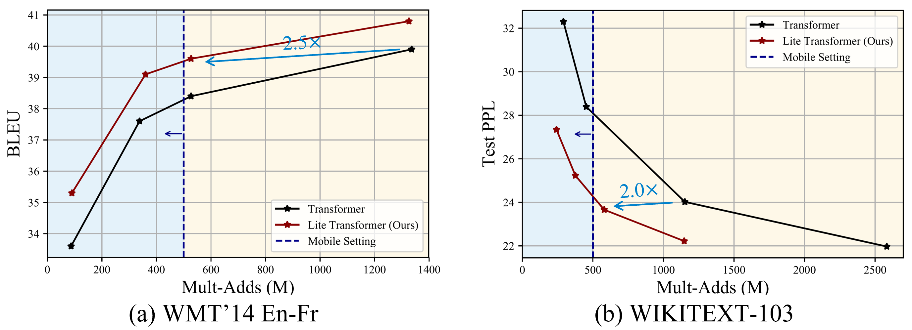
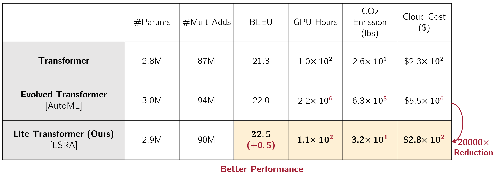
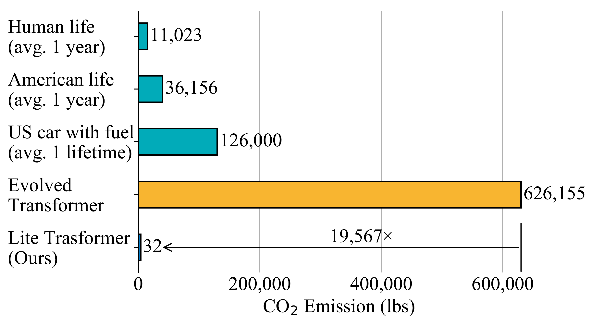
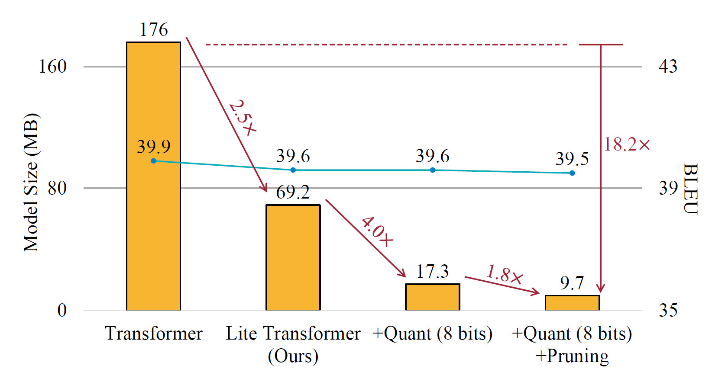

Lite Transformer with Long-Short Range Attention
Transformer has become ubiquitous in natural language processing (e.g., machine translation, question answering); however, it requires enormous amount of computations to achieve high performance, which makes it not suitable for mobile applications that are tightly constrained by the hardware resources and battery. In this paper, we present an efficient mobile NLP architecture, Lite Transformer to facilitate deploying mobile NLP applications on edge devices. The key primitive is the Long-Short Range Attention (LSRA), where one group of heads specializes in the local context modeling (by convolution) while another group specializes in the long-distance relationship modeling (by attention). Such specialization brings consistent improvement over the vanilla transformer on three well-established language tasks: machine translation, abstractive summarization, and language modeling. Under constrained resources (500M/100M MACs), Lite Transformer outperforms transformer on WMT'14 English-French by 1.2/1.7 BLEU, respectively. Lite Transformer reduces the computation of transformer base model by 2.5x with 0.3 BLEU score degradation. Combining with pruning and quantization, we further compressed the model size of Lite Transformer by 18.2x. For language modeling, Lite Transformer achieves 1.8 lower perplexity than the transformer at around 500M MACs. Notably, Lite Transformer outperforms the AutoML-based Evolved Transformer by 0.5 higher BLEU for the mobile NLP setting without the costly architecture search that requires more than 250 GPU years. Code has been made available at https://github.com/mit-han-lab/lite-transformer.
Our paper presents a Lite Transformer with Long-Short Range Attention (LSRA):





@inproceedings{Wu2020LiteTransformer,
title={Lite Transformer with Long-Short Range Attention},
author={Zhanghao Wu* and Zhijian Liu* and Ji Lin and Yujun Lin and Song Han},
booktitle={International Conference on Learning Representations (ICLR)},
year={2020}
}
Acknowledgments: We sincerely thank MIT-IBM Watson AI Lab, Facebook Faculty Award, Google-Daydream Research Award, and AWS Machine Learning Research Award for supporting this research.